虚拟内存（Virtual Memory）¶
Overview
本讲涵盖按需分页、页面置换算法、帧分配以及抖动等虚拟内存核心概念。
按需分页（Demand Paging）¶
核心思想
按需分页仅在页面被访问（demanded）时才将其调入内存。
| 情况 | 处理 |
|---|---|
| 页面无效（错误） | 中止操作 [segmentation fault] |
| 页面有效但不在内存 | 调入内存 |
调入内存的方式
- 这里的内存指物理内存
- 这称为页面错误（page fault）
- 通过交换（swapping）处理已交换出的页面
- 通过映射（mapping）处理新页面
- 无不必要的 I/O，需要更少的内存，响应更慢，可运行更多应用
什么引起页面错误？
用户空间程序访问一个地址。
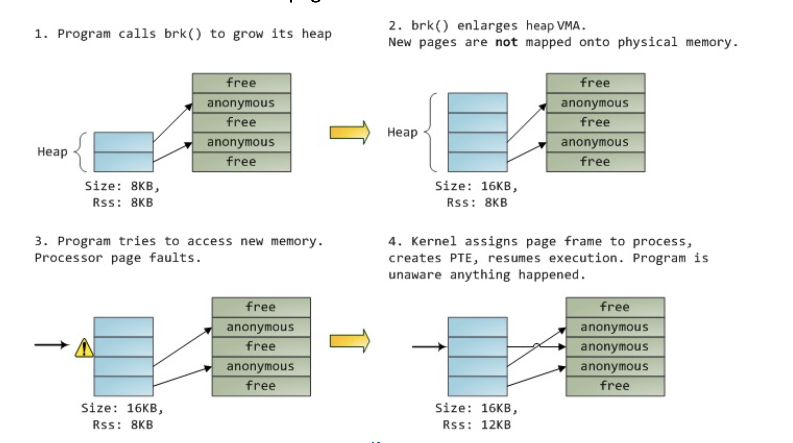
内核行为
Kernel 会直接分配，不会 lazy allocation。
哪个硬件发出页面错误？
MMU
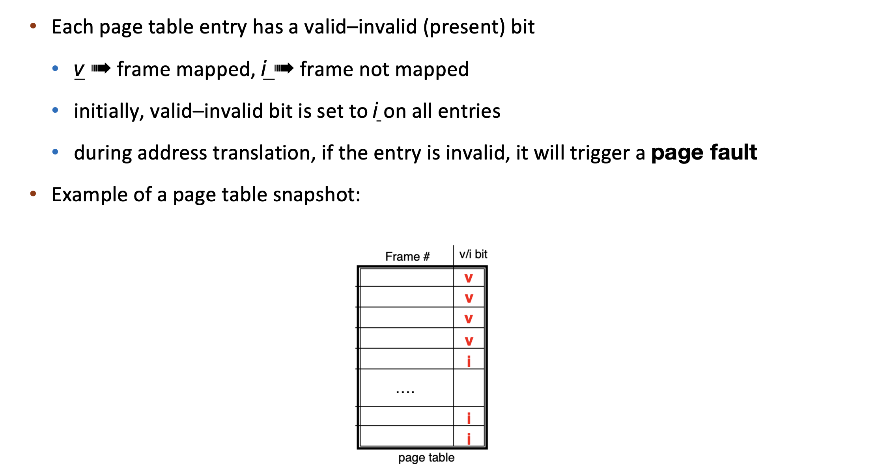
vm_area_struct¶
作用
使用 vm_area_struct 记录页面"应该"在内存中 — 按需分页
- 如果不在 vm_area_struct 中，则是 segmentation fault
- 如果权限不对，也是 segmentation fault
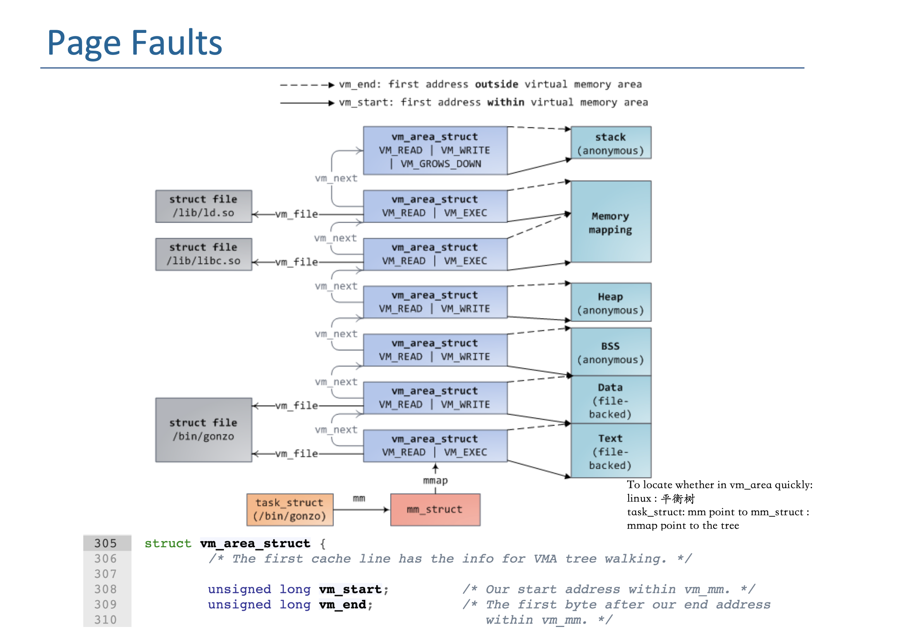
Linux 实现
在 Linux 中，vm_area_struct 使用平衡树实现。
谁处理页面错误？
操作系统
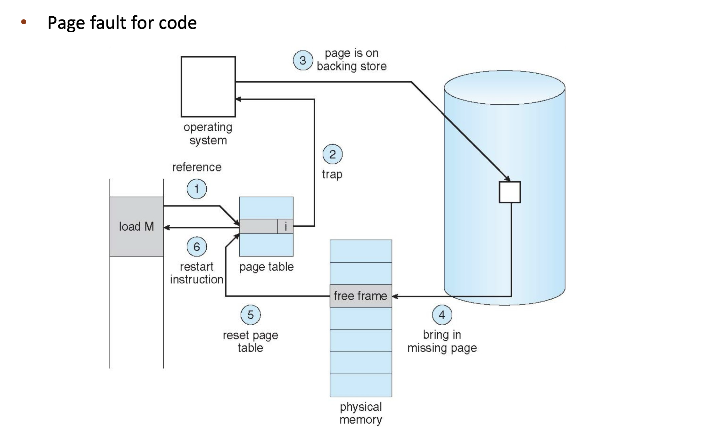
页面错误类型¶
| 类型 | 描述 |
|---|---|
| Major Page Fault | Data 和 Text 段是 file-backed |
| Minor Page Fault | stack/heap 发生的 fault（步骤 3、4 不会发生） |
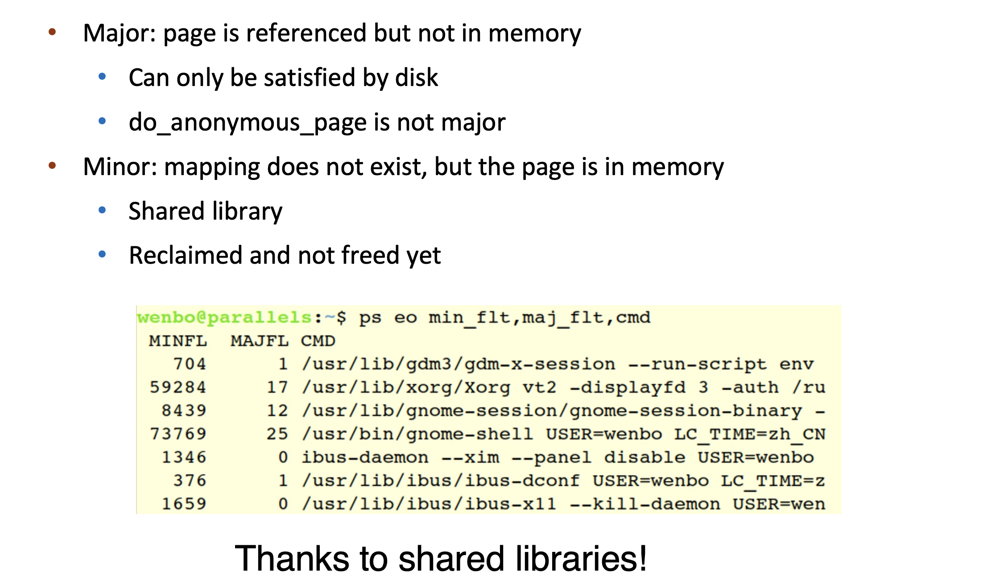
页面错误处理流程¶
首次引用不在内存中的页面会触发内核陷阱：页面错误
操作系统查看内存映射来决定：
- 无效引用 → 向进程发送异常（通过检查 vma）
- 有效但不在物理内存 → 调入 - 获取空闲物理帧 - 通过磁盘操作将页面调入帧 [调度 I/O，在磁盘上休眠] - 设置页表项指示页面现在在内存中 - 重启导致页面错误的指令
页面错误处理 — 最坏情况¶
- 陷入操作系统
- 保存用户寄存器和进程状态
- 确定中断是页面错误 - 3.1 检查页面引用是否合法
- 找到空闲帧
- 确定磁盘上页面的位置，发出从磁盘到空闲帧的读取请求： - 5.1 在队列中等待直到读取请求被服务 - 5.2 等待设备寻道和/或延迟时间 - 5.3 开始将页面传输到空闲帧
- 等待时，将 CPU 分配给其他进程
- 收到磁盘 I/O 子系统的中断（I/O 完成） - 7.1 确定中断来自磁盘 - 7.2 标记页面错误进程为就绪
- 等待 CPU 再次分配给此进程 - 8.1 保存其他进程的寄存器和进程状态 - 8.2 上下文切换到页面错误进程
- 更正页表，映射新帧
- 返回用户：恢复用户寄存器、进程状态和新页表，然后恢复中断的指令
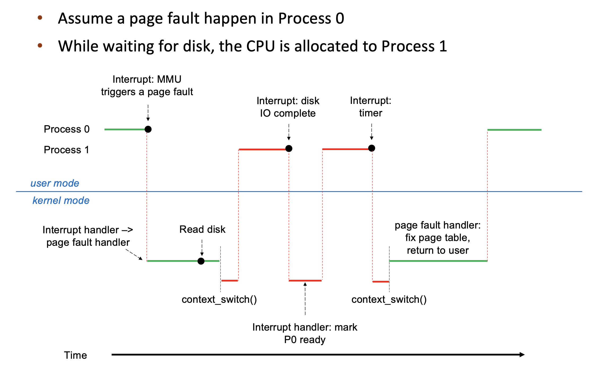
开销
上下文切换
有效访问时间（EAT）¶
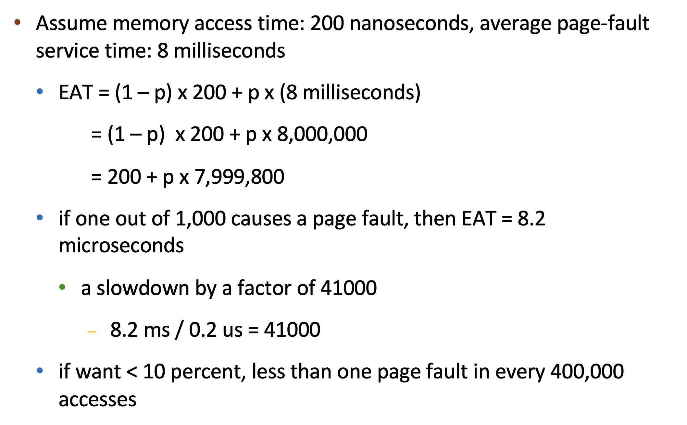
按需分页优化¶
优化策略
- 交换空间 I/O 比文件系统 I/O 快（即使在同一设备上）
- 在进程加载时将整个进程映像从磁盘复制到交换空间
- 从程序二进制文件按需分页，释放帧时丢弃而不是换出（下次从磁盘重新加载）
仍需写入交换空间的情况
- 与文件无关的页面（如栈和堆）— 匿名内存
- 在内存中修改但尚未写回文件系统的页面
移动系统
通常不支持交换，而是从文件系统按需分页并回收只读页面（如代码）。
写时复制（Copy-on-Write）¶
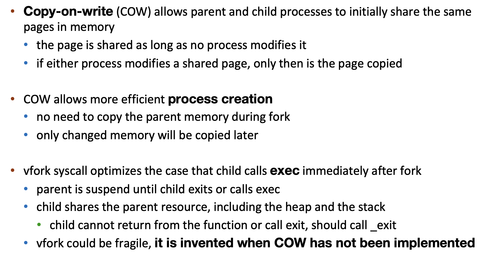
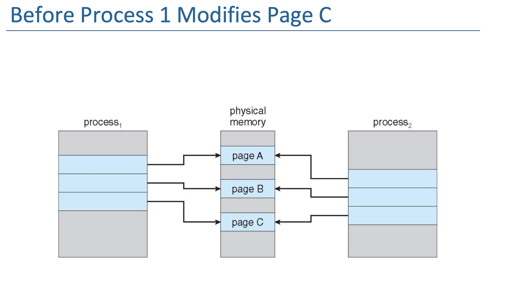
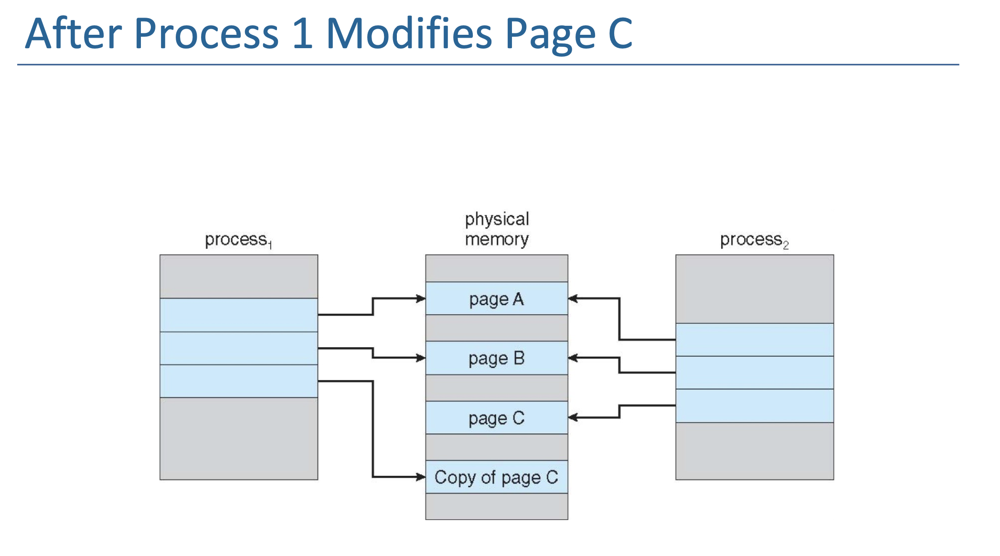
页面置换（Page Replacement）¶
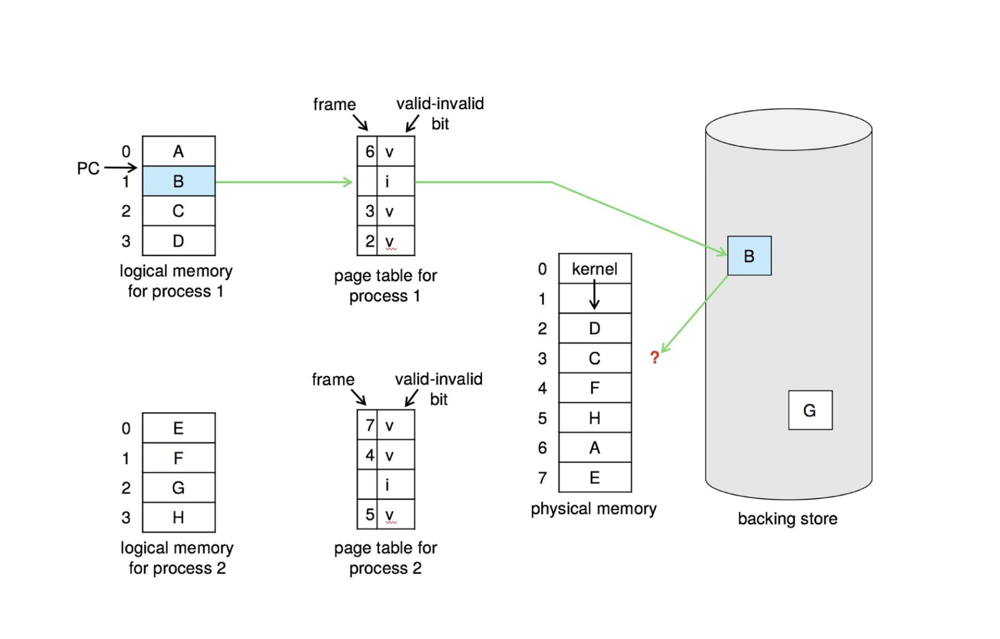
页面置换流程：
- 找到磁盘上所需页面的位置
- 找到空闲帧： - 如果有空闲帧，使用它 - 如果没有，使用页面置换策略选择受害帧，如果脏则写入磁盘
- 将所需页面调入空闲帧；更新页表
- 重启导致陷阱的指令
注意
现在可能需要 2 次页面 I/O 来处理一次页面错误 → 增加 EAT
页面置换算法¶
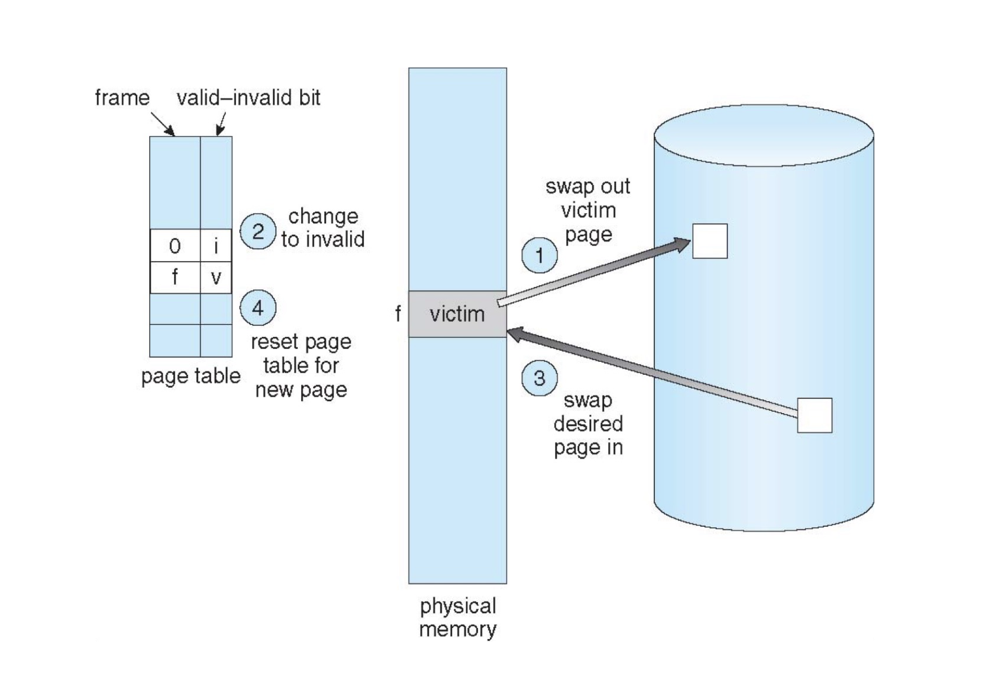
FIFO¶
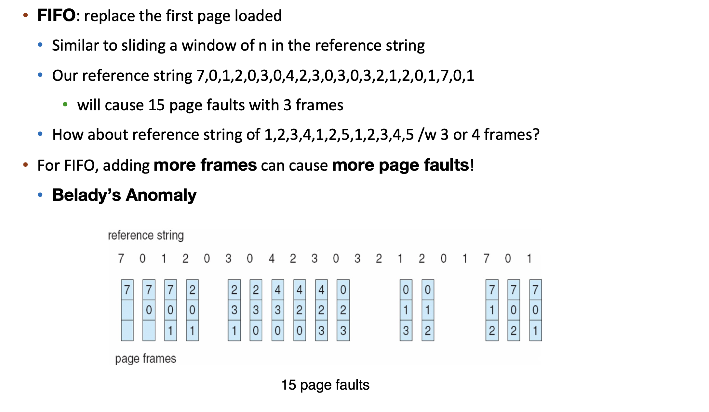
最优算法（Optimal）¶
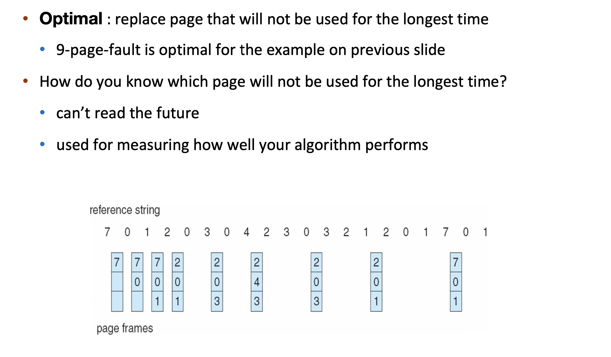
LRU¶
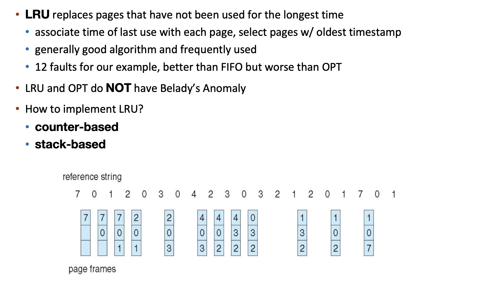
基于计数器的实现¶
- 每个页表项有一个计数器
- 每次引用页面时，将时钟复制到计数器
- 需要置换页面时，搜索计数器最小的页面
- 可以使用最小堆
基于栈的实现¶
- 保持页面号的栈（双向链表）
- 引用页面时，将其移到栈顶
- 每次更新更昂贵，但不需要搜索置换
LRU 近似实现¶
硬件支持
基于计数器和栈的 LRU 开销很高，硬件提供引用位（reference bit）。
带引用位的 LRU 近似：
- 为每个页面关联一个引用位，初始设为 0
- 引用页面时，设置位为 1（由硬件完成）
- 置换引用位 = 0 的任何页面（如果存在）
附加引用位算法：
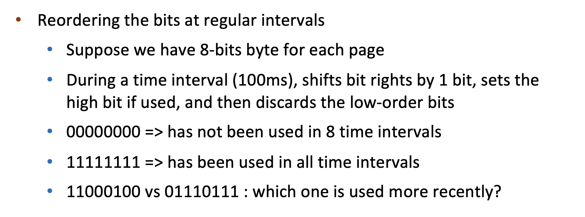
比较
11000100 比 01000100 更近被使用 — 比较大小即可
二次机会算法（Second-Chance）¶
一般是 FIFO，加上硬件提供的引用位
时钟置换（Clock Replacement）：
如果要置换的页面：
- 引用位 = 0 → 置换它
- 引用位 = 1 则： 1. 设置引用位为 0，将页面留在内存中 2. 置换下一个页面，遵循相同规则
增强型二次机会算法¶
使用修改位（modify bit）：
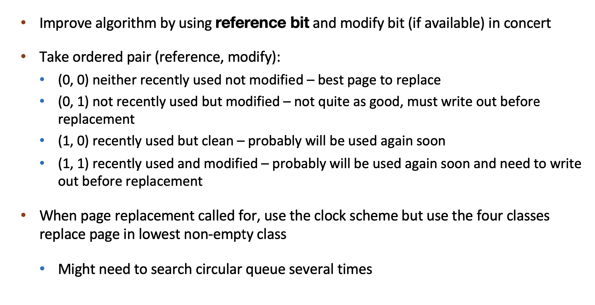
基于计数的页面置换¶
记录每个页面的引用次数。
| 算法 | 描述 |
|---|---|
| LFU | 置换计数器最小的页面（问题：初始化时大量使用然后不再使用的页面） |
| MFU | 置换计数器最大的页面（基于计数最小的页面可能刚调入且尚未使用） |
页面缓冲算法¶
内核工作线程
始终保持一个空闲帧池。
- 需要时帧可用，无需在错误时查找
- 将页面读入空闲帧而不等待受害者写出：尽快重启
- 方便时驱逐受害者
可能保持修改页面列表：
- 当磁盘空闲时，将页面写入并设为非脏：此页面可以被置换而无需写入后备存储
可能保持空闲帧内容完整并记录其中内容 — 一种缓存：
- 如果在重用前再次被引用，无需再次从磁盘加载内容
- 缓存命中
帧分配（Allocation of Frames）¶
等量分配¶
例如，如果有 100 个帧（在为 OS 分配帧之后）和 5 个进程，给每个进程 20 帧。
比例分配¶
根据进程大小分配，随多道程序度和进程大小变化而动态变化。
Linux
在 Linux 中只有按需分页，没有等量/比例分配。
全局置换¶
进程从所有帧集合中选择置换帧；一个进程可以从另一个进程获取帧。
- 进程执行时间可能变化很大 — 取决于其他进程
- 但吞吐量更高，所以更常见
回收页面¶
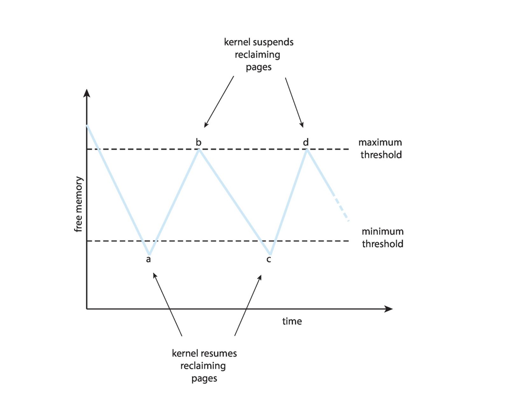
激进回收
- 杀死一些进程
- 根据 OOM score
- 在可用内存低时被终止的可能性
局部置换¶
每个进程只从自己分配的帧集合中选择。
- 每个进程性能更一致
- 但可能未充分利用内存
抖动（Thrashing）¶
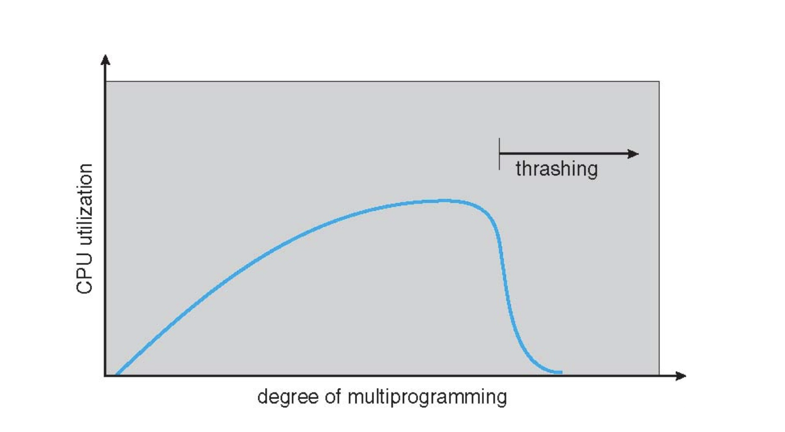
定义
如果进程没有"足够"的页面（帧），页面错误率可能很高：
- 页面错误获取页面，置换某个现有帧
- 但很快又需要被置换的帧
- 导致：低 CPU 利用率 → 内核认为需要增加多道程序度 → 另一个进程加入系统
抖动：进程忙于换入换出页面。
解决方案
杀死一些进程可以帮助停止抖动。
为什么按需分页有效？¶
- 进程内存访问具有高局部性（locality）
- 进程从一个局部迁移到另一个局部，局部可能重叠
为什么会发生抖动？¶
- 总内存大小 < 总局部大小
解决抖动¶
选项 1：
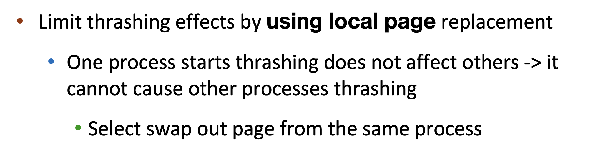
选项 2：
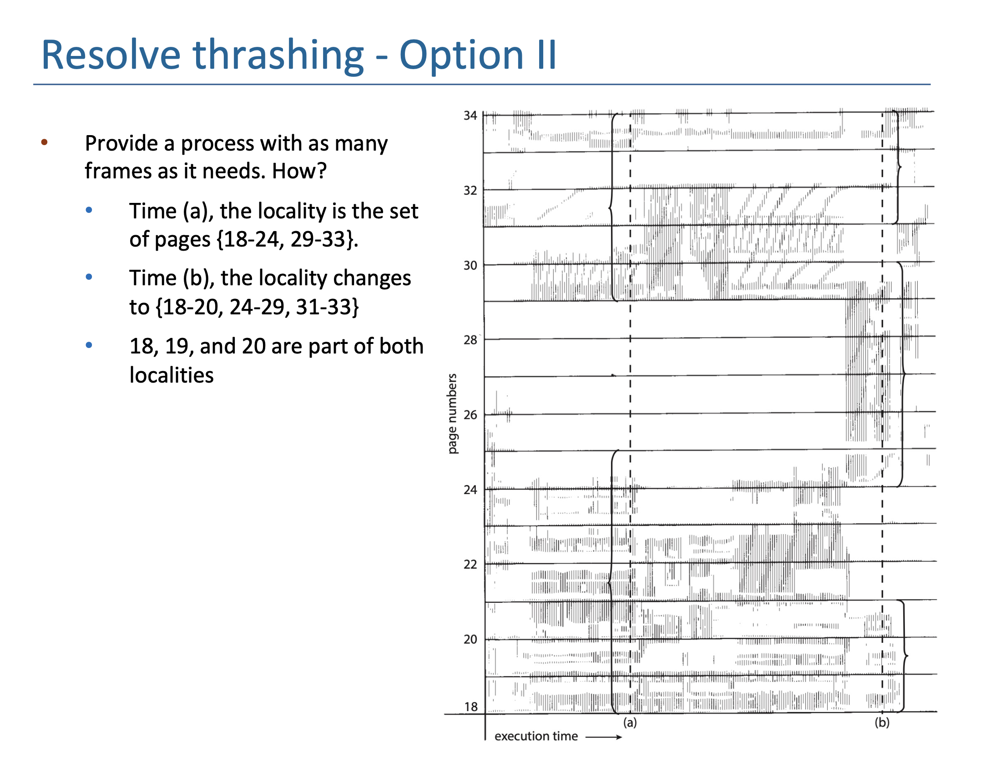
工作集模型¶
工作集窗口（Δ）：固定数量的页面引用
| Δ 大小 | 效果 |
|---|---|
| 太小 | 不会包含整个局部 |
| 太大 | 会包含多个局部 |
| = ∞ | 会包含整个程序 |
进程 pi 的工作集（WSSi）：最近 Δ 中引用的页面总数（随时间变化）
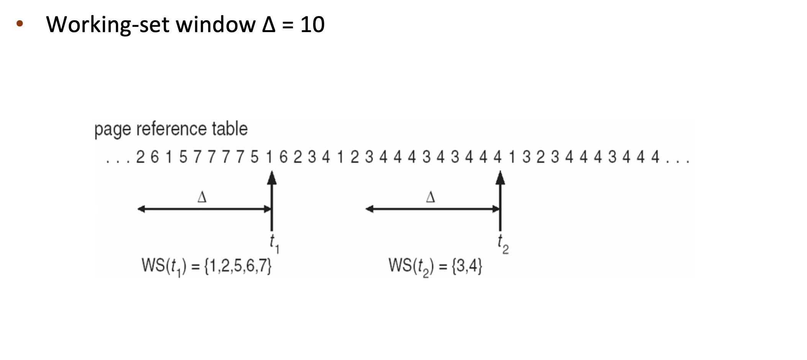
总工作集： \(D = \Sigma WSS_i\)
- 局部的近似
- 如果 \(D > m\) → 抖动的可能性
- 避免抖动：如果 \(D > m\)，挂起或换出一些进程
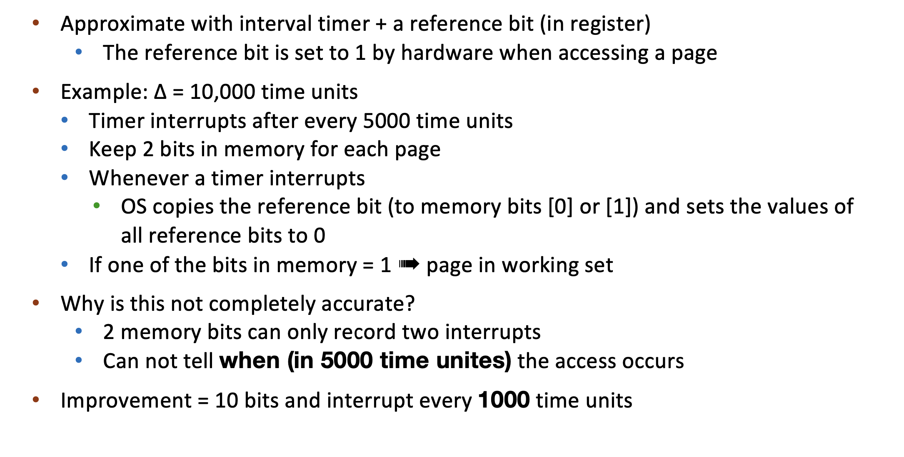
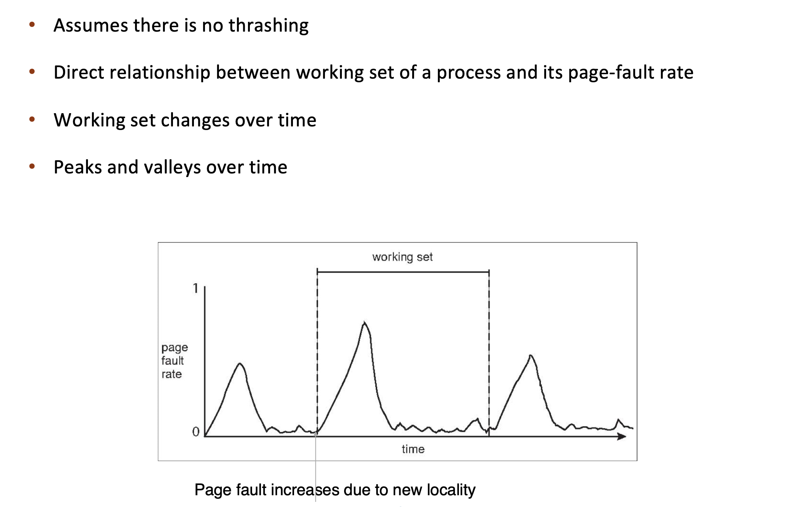
其他考虑¶
Slab 分配¶
关键点
- 每个用户进程有自己的页表
- 用户无法访问"内核帧" — 内核有自己的页表
- 同一进程的多个线程共享同一个页表
- mm_struct 里的页表是用户空间的页表
- 内核空间的页表在上下文切换时切换
创建日期: 2024年12月27日 21:05:43